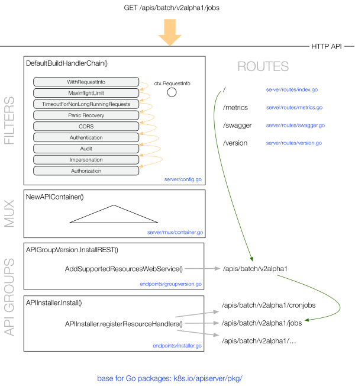

kube-apiserver
kube-apiserver 是 Kubernetes 最重要的核心组件之一，主要提供以下的功能
- 提供集群管理的 REST API 接口，包括认证授权、数据校验以及集群状态变更等
- 提供其他模块之间的数据交互和通信的枢纽（其他模块通过 API Server 查询或修改数据，只有 API Server 才直接操作 etcd）
REST API
kube-apiserver 支持同时提供 https（默认监听在 6443 端口）和 http API（默认监听在 127.0.0.1 的 8080 端口），其中 http API 是非安全接口，不做任何认证授权机制，不建议生产环境启用。两个接口提供的 REST API 格式相同，参考 Kubernetes API Reference 查看所有 API 的调用格式。

（图片来自 OpenShift Blog）
在实际使用中，通常通过 kubectl 来访问 apiserver，也可以通过 Kubernetes 各个语言的 client 库来访问 apiserver。在使用 kubectl 时，打开调试日志也可以看到每个 API 调用的格式，比如
$ kubectl --v=8 get pods
可通过 kubectl api-versions 和 kubectl api-resources 查询 Kubernetes API 支持的 API 版本以及资源对象。
$ kubectl api-versions
admissionregistration.k8s.io/v1beta1
apiextensions.k8s.io/v1beta1
apiregistration.k8s.io/v1
apiregistration.k8s.io/v1beta1
apps/v1
apps/v1beta1
apps/v1beta2
authentication.k8s.io/v1
authentication.k8s.io/v1beta1
authorization.k8s.io/v1
authorization.k8s.io/v1beta1
autoscaling/v1
autoscaling/v2beta1
batch/v1
batch/v1beta1
certificates.k8s.io/v1beta1
events.k8s.io/v1beta1
extensions/v1beta1
metrics.k8s.io/v1beta1
networking.k8s.io/v1
policy/v1beta1
rbac.authorization.k8s.io/v1
rbac.authorization.k8s.io/v1beta1
scheduling.k8s.io/v1beta1
storage.k8s.io/v1
storage.k8s.io/v1beta1
v1
$ kubectl api-resources --api-group=storage.k8s.io
NAME SHORTNAMES APIGROUP NAMESPACED KIND
storageclasses sc storage.k8s.io false StorageClass
volumeattachments storage.k8s.io false VolumeAttachment
OpenAPI 和 Swagger
通过 /swaggerapi 可以查看 Swagger API，/openapi/v2 查看 OpenAPI。
开启 --enable-swagger-ui=true 后还可以通过 /swagger-ui 访问 Swagger UI。
根据 OpenAPI 也可以生成各种语言的客户端，比如可以用下面的命令生成 Go 语言的客户端：
git clone https://github.com/kubernetes-client/gen /tmp/gen
cat >go.settings <<EOF
# Kubernetes branch name
export KUBERNETES_BRANCH="release-1.11"
# client version for packaging and releasing.
export CLIENT_VERSION="1.0"
# Name of the release package
export PACKAGE_NAME="client-go"
EOF
/tmp/gen/openapi/go.sh ./client-go ./go.settings
访问控制
Kubernetes API 的每个请求都会经过多阶段的访问控制之后才会被接受，这包括认证、授权以及准入控制（Admission Control）等。

认证
开启 TLS 时，所有的请求都需要首先认证。Kubernetes 支持多种认证机制，并支持同时开启多个认证插件（只要有一个认证通过即可）。如果认证成功，则用户的 username 会传入授权模块做进一步授权验证；而对于认证失败的请求则返回 HTTP 401。
Kubernetes 不直接管理用户
虽然 Kubernetes 认证和授权用到了 username，但 Kubernetes 并不直接管理用户，不能创建
user对象，也不存储 username。
更多认证模块的使用方法可以参考 Kubernetes 认证插件。
授权
认证之后的请求就到了授权模块。跟认证类似，Kubernetes 也支持多种授权机制，并支持同时开启多个授权插件（只要有一个验证通过即可）。如果授权成功，则用户的请求会发送到准入控制模块做进一步的请求验证；而对于授权失败的请求则返回 HTTP 403.
更多授权模块的使用方法可以参考 Kubernetes 授权插件。
准入控制
准入控制（Admission Control）用来对请求做进一步的验证或添加默认参数。不同于授权和认证只关心请求的用户和操作，准入控制还处理请求的内容，并且仅对创建、更新、删除或连接（如代理）等有效，而对读操作无效。准入控制也支持同时开启多个插件，它们依次调用，只有全部插件都通过的请求才可以放过进入系统。
更多准入控制模块的使用方法可以参考 Kubernetes 准入控制。
启动 apiserver 示例
kube-apiserver --feature-gates=AllAlpha=true --runtime-config=api/all=true \
--requestheader-allowed-names=front-proxy-client \
--client-ca-file=/etc/kubernetes/pki/ca.crt \
--allow-privileged=true \
--experimental-bootstrap-token-auth=true \
--storage-backend=etcd3 \
--requestheader-username-headers=X-Remote-User \
--requestheader-extra-headers-prefix=X-Remote-Extra- \
--service-account-key-file=/etc/kubernetes/pki/sa.pub \
--tls-cert-file=/etc/kubernetes/pki/apiserver.crt \
--tls-private-key-file=/etc/kubernetes/pki/apiserver.key \
--kubelet-client-certificate=/etc/kubernetes/pki/apiserver-kubelet-client.crt \
--requestheader-client-ca-file=/etc/kubernetes/pki/front-proxy-ca.crt \
--insecure-port=8080 \
--admission-control=NamespaceLifecycle,LimitRanger,ServiceAccount,PersistentVolumeLabel,DefaultStorageClass,ResourceQuota,DefaultTolerationSeconds \
--requestheader-group-headers=X-Remote-Group \
--kubelet-client-key=/etc/kubernetes/pki/apiserver-kubelet-client.key \
--secure-port=6443 \
--kubelet-preferred-address-types=InternalIP,ExternalIP,Hostname \
--service-cluster-ip-range=10.96.0.0/12 \
--authorization-mode=RBAC \
--advertise-address=192.168.0.20 --etcd-servers=http://127.0.0.1:2379
工作原理
kube-apiserver 提供了 Kubernetes 的 REST API，实现了认证、授权、准入控制等安全校验功能，同时也负责集群状态的存储操作（通过 etcd）。

以 /apis/batch/v2alpha1/jobs 为例，GET 请求的处理过程如下图所示：

POST 请求的处理过程为：

（图片来自 OpenShift Blog）
API 访问
有多种方式可以访问 Kubernetes 提供的 REST API：
kubectl
kubectl get --raw /api/v1/namespaces
kubectl get --raw /apis/metrics.k8s.io/v1beta1/nodes
kubectl get --raw /apis/metrics.k8s.io/v1beta1/pods
kubectl proxy
$ kubectl proxy --port=8080 &
$ curl http://localhost:8080/api/
{
"versions": [
"v1"
]
}
curl
# In Pods with service account.
$ TOKEN=$(cat /run/secrets/kubernetes.io/serviceaccount/token)
$ CACERT=/run/secrets/kubernetes.io/serviceaccount/ca.crt
$ curl --cacert $CACERT --header "Authorization: Bearer $TOKEN" https://$KUBERNETES_SERVICE_HOST:$KUBERNETES_SERVICE_PORT/api
{
"kind": "APIVersions",
"versions": [
"v1"
],
"serverAddressByClientCIDRs": [
{
"clientCIDR": "0.0.0.0/0",
"serverAddress": "10.0.1.149:443"
}
]
}
# Outside of Pods.
$ APISERVER=$(kubectl config view | grep server | cut -f 2- -d ":" | tr -d " ")
$ TOKEN=$(kubectl describe secret $(kubectl get secrets | grep default | cut -f1 -d ' ') | grep -E '^token'| cut -f2 -d':'| tr -d '\t')
$ curl $APISERVER/api --header "Authorization: Bearer $TOKEN" --insecure
{
"kind": "APIVersions",
"versions": [
"v1"
],
"serverAddressByClientCIDRs": [
{
"clientCIDR": "0.0.0.0/0",
"serverAddress": "10.0.1.149:443"
}
]
}
API 参考文档
最近 3 个稳定版本的 API 参考文档为：